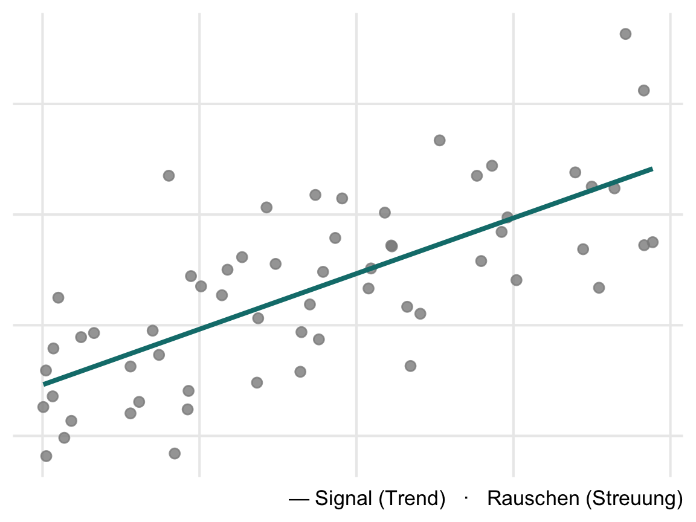

Methoden der standardisierten Sozialforschung · BA Pädagogik · KIT · SoSe 2026
lernfoerderung„Der beste Unterricht ist Frontalunterricht.”
„Mädchen sind sprachbegabt, Jungs mathematisch.”
„Die soziale Herkunft ist entscheidend für den Bildungserfolg von Jugendlichen.”
Glauben oder prüfen?
Statistik ist keine Formelsammlung, sondern die Kunst, aus Daten über die Welt zu lernen — und gute Schlüsse zu ziehen, wenn nichts sicher ist.
Jede Beobachtung ist eine Mischung aus
Die ganze Kunst: beides trennen.

Beschreiben „Über welche fachlichen Kompetenzen verfügen (deutsche) 9.-Klässler:innen in Deutsch?”
Erklären „Was sind Ursachen für geringe Deutschkompetenzen?”
Verändern „Wie lassen sich fachliche Kompetenzen in Deutsch fördern?”
Statistik liefert das Handwerkszeug für alle drei — heute starten wir beim Beschreiben.
Statistische Untersuchungen folgen einem Zyklus — nicht „Formel anwenden”, sondern:
| Phase | Leitfrage |
|---|---|
| Problem | Was wollen wir wissen? |
| Plan | Was messen wir, an wem, wie? |
| Data | Daten erheben, aufbereiten, prüfen |
| Analysis | Muster suchen: Tabellen, Grafiken, Kennwerte |
| Conclusion | Was haben wir gelernt? Was bleibt unsicher? |
Eine Schule führt ein Mathe-Lernförderprogramm ein. Wirkt es?
Genau dieses Szenario begleitet uns als Datensatz durch alle vier Blöcke.
Population: Gesamtheit der statistischen Einheiten, für die die zu treffenden Aussagen Gültigkeit besitzen sollen.
Stichprobe: Teilmenge der Population.
Beispiel: Wir untersuchen 200 Achtklässler:innen (Stichprobe) — Aussagen sollen aber für Achtklässler:innen allgemein gelten (Population).
Statistische Einheit (Merkmalsträger): Personen oder Objekte, welche Eigenschaften besitzen, die im Rahmen einer Untersuchung von Interesse sind.
Merkmal: Eigenschaften von Objekten (i.d.R. Personen), i.d.R. erfasst in Variablen.
Merkmale müssen definiert und operationalisiert werden.
Beispiel: „Mathematische Kompetenz” → operationalisiert als Punktzahl in einem standardisierten Test.
Unabhängige Variable (UV): Häufig auch Prädiktor. Wird systematisch variiert bzw. kontrolliert und bzgl. ihres Einflusses auf die AV untersucht (z.B. Förderprogramm ja/nein).
Abhängige Variable (AV): Häufig auch Kriteriumsvariable. Variable von zentralem Interesse (z.B. Mathematikleistung).
Statistik: Kennwert zur Beschreibung eines Merkmals der Stichprobe.
Parameter: Kennwert zur Beschreibung eines Merkmals der Population.
Qualitative vs. quantitative Variable: Qualitative Merkmale lassen nur die Aussage gleich vs. ungleich zu, während bei quantitativen Variablen auch Vergleiche in Bezug auf die Größe möglich sind.
Manifeste Variable: direkt beobachtbare oder messbare Merkmale (z.B. Lösung einer Aufgabe).
Latente Variable: theoretisch postulierte Merkmale, die durch manifeste Variablen indirekt oder vereinfacht gemessen werden (z.B. Intelligenz, Lernmotivation).
Zahlen sind nicht gleich Zahlen:
Das Skalenniveau einer Variablen legt fest, welche Aussagen über die Werte bedeutsam sind — und damit, welche Statistiken wir später überhaupt berechnen dürfen.
Zahlen kennzeichnen nur Gleichheit vs. Verschiedenheit — sie sind reine Etiketten.
Zulässige Aussage: „Kim und Alex besuchen verschiedene Schulen.”
Nicht zulässig: jede Aussage über Reihenfolge oder Abstände — die Codierung ist beliebig austauschbar.
Zahlen bilden zusätzlich eine Rangordnung ab — Abstände sind aber nicht interpretierbar.
Zulässige Aussage: „Kim hat eine bessere Note als Alex.”
Nicht zulässig: „Der Abstand zwischen Note 1 und 2 ist gleich groß wie zwischen 4 und 5.”
Zusätzlich sind Differenzen interpretierbar — gleiche Zahlabstände bedeuten gleiche Merkmalsunterschiede. Es gibt aber keinen natürlichen Nullpunkt.
Zulässige Aussage: „Kim hat sich um 10 Punkte mehr verbessert als Alex.”
Nicht zulässig: „Kim ist doppelt so kompetent wie Alex” — Verhältnisse sind ohne echten Nullpunkt nicht bedeutsam.
Zusätzlich gibt es einen natürlichen Nullpunkt — auch Verhältnisse sind interpretierbar.
Zulässige Aussage: „Alex hat doppelt so viele Fehltage wie Kim.”
| Skalenniveau | gleich/verschieden | Ordnung | Differenzen | Verhältnisse |
|---|---|---|---|---|
| Nominal | ✓ | — | — | — |
| Ordinal | ✓ | ✓ | — | — |
| Intervall | ✓ | ✓ | ✓ | — |
| Verhältnis | ✓ | ✓ | ✓ | ✓ |
Intervall- und verhältnisskalierte Variablen fasst man als metrisch (kardinalskaliert) zusammen.
Merkregel: Je höher das Niveau, desto mehr Information — und desto mehr dürfen wir rechnen.
lernfoerderungEine (fiktive) Evaluation: 200 Achtklässler:innen aus 8 Schulen, zufällig zugewiesen zu einem zusätzlichen Mathe-Lernförderprogramm oder einer Kontrollgruppe.
Dieser Datensatz begleitet uns durch alle vier Blöcke — von der ersten Häufigkeitstabelle (Block 2) bis zum Gruppenvergleich (Block 4).
| Variable | Inhalt | Skalenniveau? |
|---|---|---|
schule |
Schule A–H | ? |
gruppe |
Förderung / Kontrolle | ? |
motivation |
Lernmotivation (1–5, Likert) | ? |
note_mathe |
letzte Zeugnisnote (1–6) | ? |
ses |
soziale Herkunft (niedrig/mittel/hoch) | ? |
mathe_pre |
Testwert vor dem Programm | ? |
mathe_post |
Testwert nach dem Programm | ? |
fehltage |
Anzahl Fehltage | ? |
Eure Aufgabe: Ordnet jeder Variable ihr Skalenniveau zu — Begründung in einem Satz.
R ist die Sprache — RStudio die Arbeitsumgebung drumherum.
Vier Bereiche in RStudio:
| Bereich | Funktion |
|---|---|
| Skript (oben links) | Hier steht euer Code — speicherbar, wiederverwendbar |
| Konsole (unten links) | Hier wird Code ausgeführt, hier erscheinen Ergebnisse |
| Environment (oben rechts) | Welche Objekte/Daten sind gerade geladen? |
| Files/Plots/Help (unten rechts) | Dateien, Grafiken, Hilfeseiten |
Mit <- weisen wir Werte einem Objekt zu:
Funktionen haben die Form name(eingabe):
Was mean() genau berechnet und wann es sinnvoll ist (Stichwort: Skalenniveau!) — das ist Thema von Block 2.
Wenn 2 erscheint: fertig. Bei Problemen → Forum auf ILIAS, wir lösen das vor Block 2.
Auf ILIAS bis Mittwoch vor Block 2:
lernfoerderung-Datensatzes ihr Skalenniveau zu — mit je einem Satz Begründung.1 + 1.Morgen wird es konkret — wir laden lernfoerderung in R und beschreiben die Daten:
Beide Texte als Auszüge auf ILIAS — zur Vertiefung, nicht als Pflichtlektüre vor dem Block.